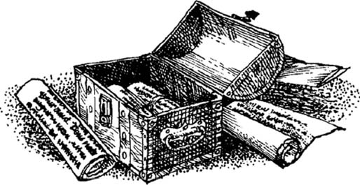

Listen to Part 1:
Viborg là một thành phố ở Đan Mạch. Đây là một thành phố cổ nhưng chỉ còn lại một vài ngôi nhà cổ. Hầu như toàn bộ thị trấn cổ này đã bị xóa sổ trong một vụ hỏa hoạn lớn năm 1726.
Ông Anderson đang viết một quyển sách về lịch sử Đan Mạch. Ông đã tới Viborg năm 1891. Ông muốn nghiên cứu lịch sử thị trấn.
Ông đã trọ trong một tòa nhà cổ tại Viborg – Quán trọ The Golden Lion. Quán trọ này có niên đại gần 350 năm.
Anderson yêu cầu quản lý cho mình một căn phòng lớn. Chủ quán The Golden Lion đã chỉ cho ông hai phòng – phòng số 12 và phòng số 14. Mỗi phòng đều có ba ô cửa sổ lớn. Cửa sổ nhìn ra phố. Anderson chọn phòng số 12.
Buổi tối, Anderson xuống tầng dưới để dùng bữa tối. Ông thấy có một bảng đen. Tên của mọi du khách đều được viết lên bảng này. Anderson nhận ra rằng quán trọ đã kín. Không còn phòng trống. Anderson thấy rằng không có phòng số 13.
Mười ba là con số không may mắn. Nhiều người không muốn ở phòng có số không may mắn.
Khi Anderson lên lầu đi ngủ, ông cố mở khóa cửa phòng mình. Cánh cửa không chịu mở. Rồi ông mới phát hiện rằng mình đã nhầm. Đây là phòng sai rồi. Con số trên cánh cửa là 13.
Ông nghe tiếng ai đó đang di chuyển trong căn phòng.
‘Xin lỗi,’ ông nói rồi đi tới cánh cửa phòng số 12.
Có thể phòng 13 dành cho người giúp việc ngủ, Anderson nghĩ thầm. Ông quyết định ngày mai sẽ hỏi chủ quán về căn phòng này.
Listen to Part 2:
Anderson thắp đèn dầu và quan sát khắp phòng. Phòng số 12 nhỏ hơn dưới ánh đèn. Anderson rất mệt. Ông đi ngủ.
Một vài bức thư của Giám mục của Viborg có từ năm 1560. Vị Giám mục này là chủ sở hữu của ba bốn căn nhà trong thành phố. Ông ta đã cho thuê một ngôi nhà cho một người đàn ông tên Nicolas Francken.
Dân thị trấn Viborg không ưa gì Nicolas Francken. Một số người đã viết thư cho Giám mục, nói rằng Francken là kẻ xấu xa. Họ nói rằng Francken là pháp sư. Họ muốn Francken ra khỏi thành phố.
Vị Giám mục đã nói rằng Nicolas Francken không làm điều gì sai trái cả. Ông không tin rằng Francken là pháp sư. Tòa thị chính sắp đóng cửa rồi. Lúc Anderson rời đi, nhân viên thị trấn đã trao đổi với ông.
‘Tôi thấy ông đang tìm hiểu về vị Giám mục và Nicolas Francken,’ viên nhân viên nói. ‘Tôi cũng thấy chúng thú vị. Nhưng tôi không biết Francken sống ở đâu. Rất nhiều hồ sơ thị trấn đã bị thiêu rụi trong vụ hỏa hoạn năm 1726.’
Anderson cảm ơn viên nhân viên và quay trở lại The Golden Lion. Ông muốn hỏi chủ quán về phòng số 13 nhưng chủ quán đang bận.
Anderson trở về phòng mình. Ông thấy phòng 12 quá bé. Ông quyết định sẽ nói với chủ quán đổi sang một căn lớn hơn. Ông cũng cảm thấy bực vì hành lý của mình bị mất. Chiếc vali vẫn được đặt bên cạnh tường. Nhưng cái bàn và cả vali đều không còn nữa. Có thể chủ quán đã cất nó vào kho. Anderson muốn lấy lại.
Ông nhìn ra ngoài cửa sổ. Có một ngôi nhà cao bên kia phố. Ông đang ngồi quay lưng ra ngọn đèn. Ông nhìn thấy bóng mình đổ dài trên tường của căn nhà đối diện. Người ở phòng 13 cũng đang đứng bên cửa sổ. Anderson nhìn thấy một cái bóng thứ hai trên bức tường của căn nhà đối diện.
Anderson mở cửa sổ thò đầu ra ngoài. Ông cố nhìn xem là ai ở căn phòng bên cạnh. Ông nhìn thấy ống tay áo của một chiếc áo dài màu trắng – chỉ thấy thế thôi. Người ở phòng 13 bỗng di chuyển ra xa cửa sổ. Đèn đỏ tắt ngúm.
Sáng hôm sau, người hầu gái đem nước nóng vào phòng. Anderson tỉnh dậy và nhớ đến chiếc vali. Ông hỏi.
Listen to Part 3:
‘Vali tôi đâu rồi, làm ơn cho tôi hỏi?’
Ông nhận thấy điều kỳ lạ khác. Gạt tàn thuốc lá ở trên bệ cửa sổ ở giữa. Ông vẫn còn nhớ rõ ràng khi ông ngồi gần cửa sổ cuối hút thuốc – ngay cạnh số 13.
Ông cố nhìn xem là ai ở căn phòng bên cạnh.
Ăn sáng xong, ông tới Tòa thị chính, tiếp tục đọc các tờ báo cũ. Ông chỉ tìm thấy thêm được một lá thư nữa của Giám mục viết về Nicolas Francken. Một nhóm dân thị trấn đã tìm cách trục xuất Francken khỏi Viborg. Họ tới nhà Francken nhưng phát hiện ra rằng Francken đã mất tích. Vị Giám mục viết rằng chẳng ai biết Flancken đã đi đâu về đâu. Như vậy là xong mọi chuyện ở đó.
‘Tại sao quán trọ lại không có phòng 13?’ Ông hỏi.
‘Nhiều người không thích ngủ ở phòng có số 13,’ chủ quán đáp lời. ‘Họ bảo là phòng đó không may mắn.’
‘Thế phòng số 13 của các ông để cho ai ở vậy?’ Anderson hỏi.
‘Không có phòng số 13,’ chủ quán đáp. ‘Phòng của ông ở ngay cạnh phòng số 14.’
‘Thì ra là thế,’ Anderson nói. ‘Tại tôi nhầm thôi. Ông lên số 12 của tôi dùng cốc brandy và hút điếu xì gà nhé?’
Listen to Part 4:
‘Cám ơn ông, rất sẵn lòng,’ chủ quán nói.
Chủ quán liếc mắt nhìn vào phòng 12.
‘Phòng này trông có vẻ bé,’ chủ quán nói.
Anderson mở cửa sổ cho khói thoát ra ngoài. Có ánh sáng đỏ và một cái bóng đổ trên bức tường của căn nhà bên kia. Ánh sáng phát ra từ số 13. Cái bóng đang nhảy loạn xạ, nhưng chẳng có một tiếng động nào.
Anderson ngồi uống brandy. Ông muốn kể với chủ quán những chuyện kỳ lạ mà ông nhìn thấy. Bỗng nghe thấy một tiếng ồn kinh khủng phát ra từ căn phòng kế bên.
‘Đó là tiếng con mèo hả?’ Anderson hỏi. ‘Hay là bên ấy có gã điên?’
‘Là ông Jensen,’ chủ quán đáp. ‘Ông ấy thường trọ ở phòng 14. Nghe nói ông ấy bệnh nặng lắm.’
‘Làm ơn đừng gây tiếng ồn nữa,’ người đàn ông nói.
‘Ông Jensen!’ Chủ quán thốt lên. ‘Còn chúng tôi tưởng ông gây ồn chứ!’
Chủ quán đập thùm thùm vào cánh cửa, rồi quay tay nắm cửa. Cánh cửa bị khóa rồi.
Listen to Part 5:
‘Để tôi gọi thêm người tới đập cửa,’ chủ quán hét lên rồi ba chân bốn cẳng chạy xuống cầu thang.
‘Tôi có điều kỳ lạ muốn nói với ông,’ Jensen bảo Anderson. ‘Căn phòng của tôi ban ngày có tới ba ô cửa sổ, đến tối chỉ còn có hai ô. Hay là ông cho rằng tôi bị điên?’
‘Trời đất! Phòng tôi cũng thế!’ Anderson hốt hoảng nói. ‘Phòng tôi lúc đêm trông hẹp hơn ban ngày.’
Anderson hét lớn và lôi Jensen ra xa khỏi cánh cửa. Cánh tay đó biến mất, cánh cửa khép lại. Tiếng cười điên loạn vọng ra từ phòng số 13.
Chủ quán đưa hai người đàn ông lên lầu. Họ mang rìu trên tay. Hai gã vung rìu đập mạnh vào cửa số 13.
Buổi sáng, những công nhân kéo sàn nằm giữa hai căn phòng 12 và 14 lên. Họ phát hiện ra một cái hộp dưới sàn.
Chẳng ai đọc được trên những mảnh giấy đó. Bởi vì được viết bằng thứ tiếng kỳ lạ. Những nét mực có màu nâu. Tưởng chừng như đã rất cũ rồi. Nhưng Anderson lại chẳng hề thấy mực đâu. Anh ta nghĩ có lẽ là máu chứ mực gì!
